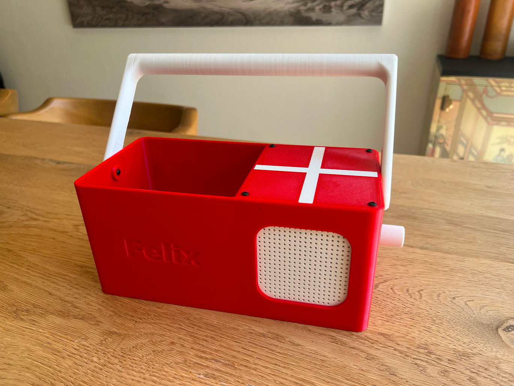
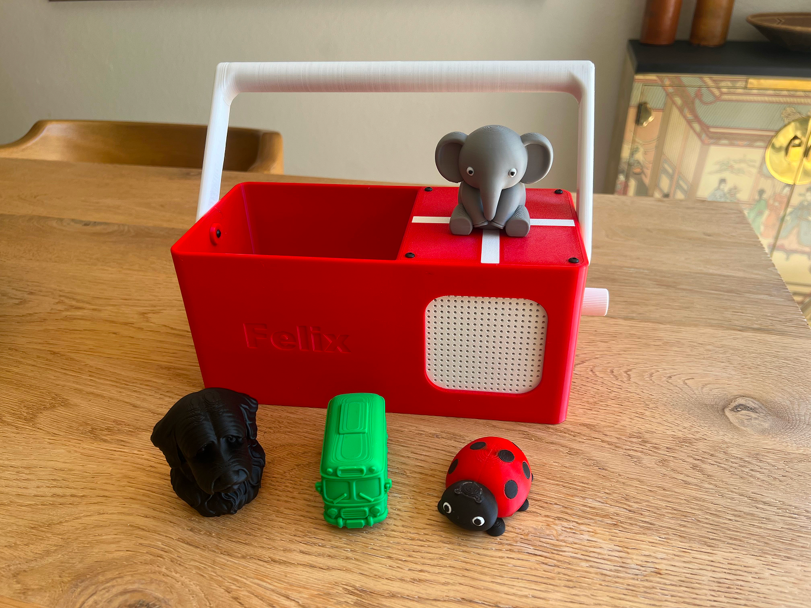
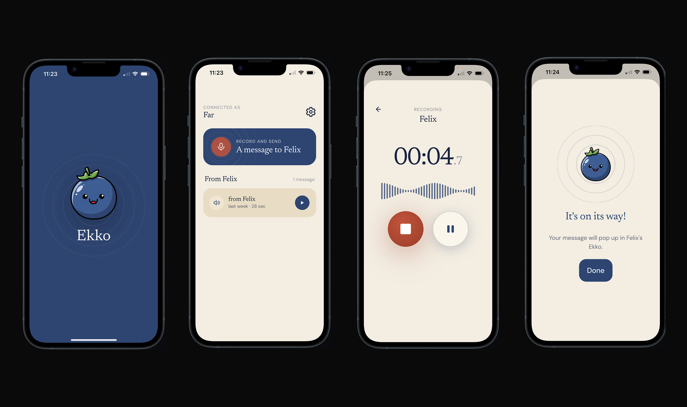

Project
Ekko
Overview
My son loves stories and songs, but I didn't love the idea of handing him a tablet to get them. I'd come across the Tonie boxes, those little speakers where a kid drops a figurine on top and audio starts playing. I thought it would just be a fun thing to build myself. So I did. I call it Ekko.
Ekko is a homemade audio player for kids. Each story, song, or character lives inside a small figure with an NFC tag hidden in it. When my son places a figure on top of the box, Ekko recognizes it and starts playing. Lift it off, and it stops. No menus, no screens, no scrolling.
I designed and modeled the entire enclosure in Fusion 360 and printed it on my 3D printer, iterating on the fit until every component sat exactly where it should. Inside, a Raspberry Pi runs the show alongside an NFC scanner that reads whichever figure is placed on top. To make setup painless, I built a local web app: I drop an NFC tag onto Ekko, it detects it instantly, and I link it to whatever audio I want it to play. Adding a new character takes seconds.
Then it became something I didn't plan for. Felix's grandparents live abroad, and Ekko quietly turned into a way for him to stay close to them. I built the Ekko app, where invited family and friends can record their own messages: a bedtime story, a song, a simple hello. Everyone gets their own figure, and when Felix places it on the box, their voice plays. Now he can hear his grandparents read to him and sing to him from the other side of the world.
That's the part I'm proudest of. It stopped being a gadget and became a way for my son to feel close to the people who love him.


